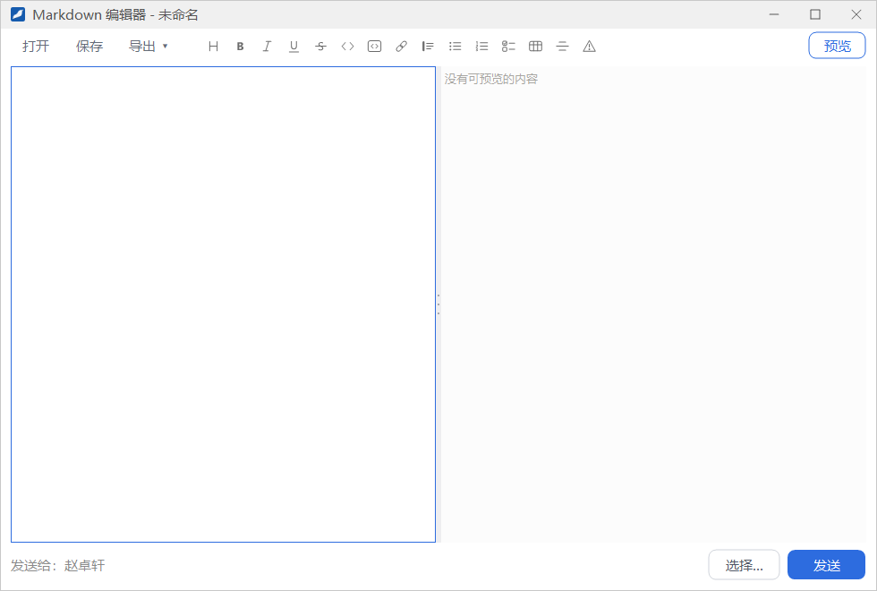
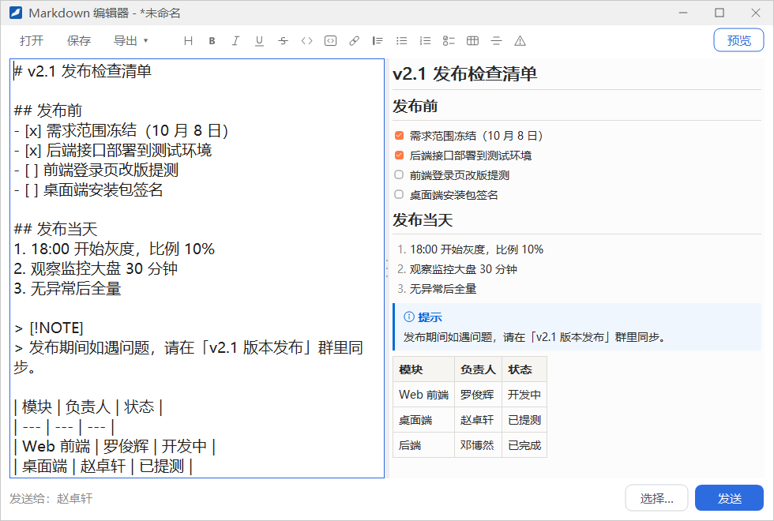
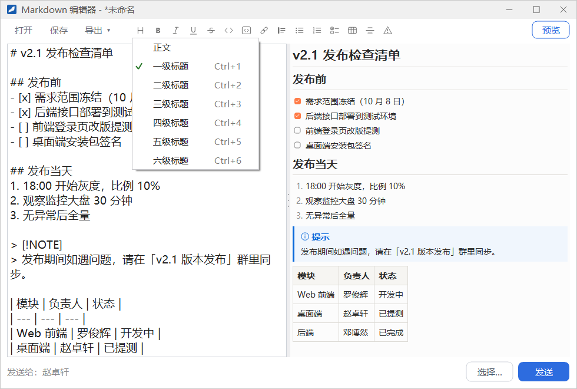
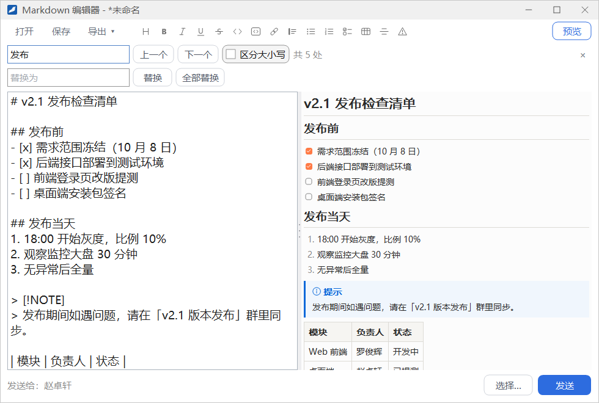
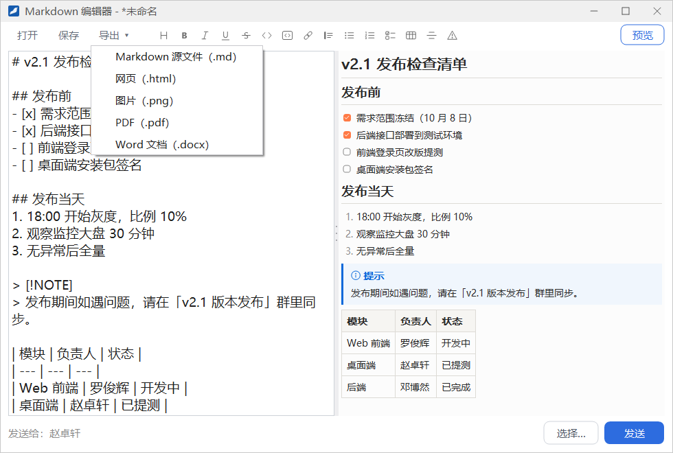
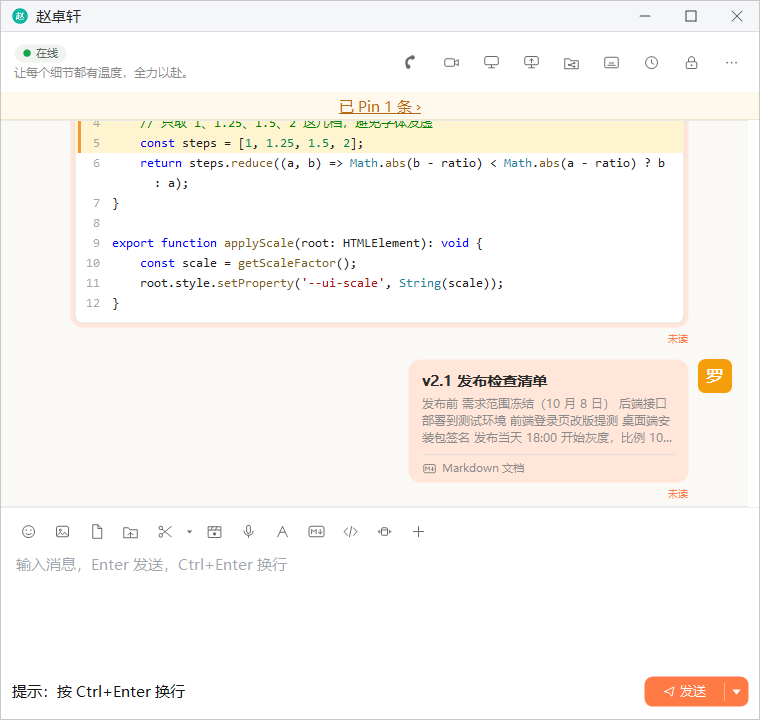
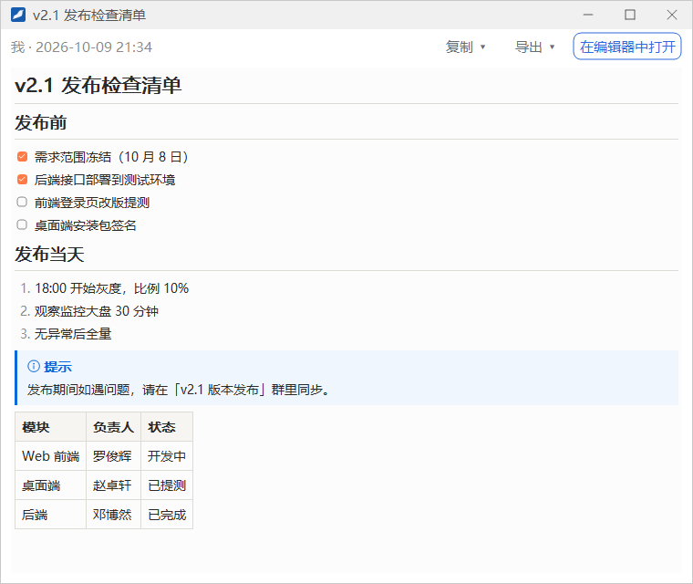

Markdown 文档
需要发一份带标题、列表、表格的说明时，可以用内置的 Markdown 编辑器写好再发出。对方收到的是一张文档卡片，点开即可阅读排好版的内容；文档还可以导出为 Word、PDF、网页或图片。
- 适用：全体员工
- 单聊、群聊通用
- 编辑器不登录也能用，登录后才能发送
打开编辑器
以下三个地方都能打开 Markdown 编辑器：
- 聊天窗口输入工具栏的 Markdown 编辑器 按钮（「M↓」图标）。从这里打开时，发送对象已经预先选好当前会话。
- 主面板系统菜单里的 Markdown 编辑器。
- 右键托盘图标，在菜单里选 Markdown 编辑器。登录前也可以这样打开，只是不能发送。
编写与预览
编辑器左边是编写区，右边是实时预览，中间的分隔条可以左右拖动。点右上角的 预览 可以关闭或重新打开预览区。

1 2 3 4 5 6 7 8 9 10 11 12 13 14 15- 标题：弹出标题级别菜单，快捷键 Ctrl+1~6
- 加粗：Ctrl+B
- 斜体：Ctrl+I
- 下划线：Ctrl+U
- 删除线：Alt+Shift+5
- 行内代码：Ctrl+Shift+`
- 代码块
- 链接：Ctrl+K
- 引用
- 无序列表
- 有序列表
- 任务列表：带勾选框的待办项
- 表格
- 分割线
- 警告框：选择提示、技巧、重要、警告或注意
选中一段文字再点格式按钮（或按快捷键），会给这段文字加上对应的格式；按 Ctrl+\ 清除选中文字的格式。在列表行或引用行的末尾按 Enter，下一行会自动接着写列表项或引用。

标题级别与警告框

点格式栏的 H 按钮，在菜单里选 正文 或 一级标题 ~ 六级标题，光标所在行就会变成对应的级别，当前级别前面带勾。
点最右边的 警告框 按钮，可以插入五种 GitHub 风格的提示块：提示、技巧、重要、警告、注意，对应的写法是 > [!NOTE]、> [!TIP]、> [!IMPORTANT]、> [!WARNING]、> [!CAUTION]。预览里会显示带标题的彩色提示块，例如上图中蓝色的「提示」。
写在代码块里的代码，只要在开头注明语言名，预览和导出时都会按语言着色。
查找与替换
按 Ctrl+F 在编写区上方打开查找栏，按 Ctrl+H 同时打开替换栏：

- 在 查找 框输入文字，右侧显示「共 N 处」。点 上一个 / 下一个（或按 Shift+F3 / F3）逐个跳转，到头后会从另一端继续查找。
- 勾选 区分大小写 时，英文字母的大小写必须一致才算找到。
- 在 替换为 框输入新文字，点 替换 替换当前这一处，点 全部替换 一次替换所有找到的地方。
- 按 Esc 或点右端的 × 关闭查找栏。
打开、保存与导出
左上角的 打开 读取本机的 Markdown 文件，保存 把当前文档存为 .md 文件。窗口标题显示文档名，有未保存的修改时文档名前带「*」。

点 导出 ▾ 可以把文档导出为：
- Markdown 源文件（.md）
- 网页（.html）
- 图片（.png），整篇文档生成一张长图
- PDF（.pdf）
- Word 文档（.docx）
关闭有未保存修改的编辑器时，会询问「文档「…」有未保存的修改，是否保存？」；退出客户端时如果还有这样的文档，也会先提醒你。
发送文档
编辑器底部是发送区，左边显示「发送给：…」。
- 从聊天窗口打开编辑器时，发送对象已经是当前会话；否则点 选择…，在弹出的窗口里选择要发给的人或群，可以选多个。
- 点 发送。发出后编辑器不会关闭，底部提示「已发送给 N 个对象」，可以接着修改或发给别人。
没有登录时发送区显示「登录后可发送」。文档为空、或长度超过单条消息的上限时不能发送，会弹出提示；文档太长时可以先导出为文件，再以文件的方式发送。

查看收到的文档
点聊天中的 Markdown 卡片（或右键选 在窗口中查看），会打开预览窗口。窗口标题是文档标题，左上角显示发送者和发送时间。

- 复制 ▾：可以选 复制 Markdown 源文本、复制全文（带格式）、复制为纯文字 或 复制为图片。也可以在正文里拖动鼠标选中一部分，按 Ctrl+C 复制。
- 导出 ▾：导出格式与编辑器相同。
- 在编辑器中打开：把这份文档放进 Markdown 编辑器，修改后可以另存或重新发送。
在卡片上右键，还可以直接选 复制 Markdown 源文本。